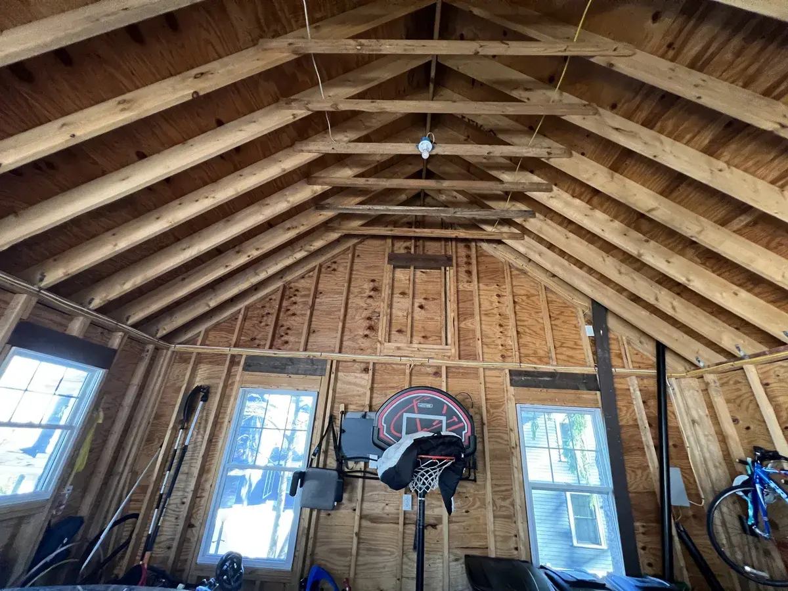
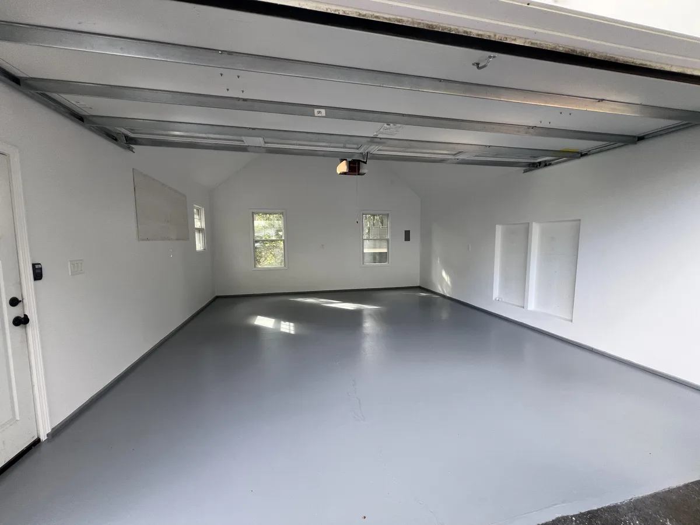

Home addition contractors in Massachusetts
Home addition contractors in Massachusetts: more space that looks like it was always there
Home addition contractors at DeFaria Construction plan and build sunrooms, family rooms, primary suites, bump-outs and rooms over the garage across Essex and Middlesex County. One owner-led team handles framing, roof and siding tie-ins, permits and the finish inside.
Our work
New living space, built by our own crew
A real DeFaria project: open framing, built-ins and the finished room. It is not necessarily in your town, but it shows how we take a space from structure to finish.
Get a Free Estimate
The short answer
What do home addition contractors do?

Home addition contractors design, permit and build new living space attached to your existing house. The hard part is not the new room itself. It is the foundation, the structure, and tying the new roof, siding, heat and electrical into the old house so the addition looks and works like it was always there.
- Sunrooms and four-season rooms.
- Family room and kitchen expansions on the main floor.
- Primary suite additions with a bedroom and bathroom.
- Bump-outs that add a few feet where you need them most.
- Rooms over the garage and second-story additions.
- In-law and accessory spaces where your town allows them.
Homeowners also search for house addition contractors or home addition builders. Whatever the name, what you want is one company responsible for the whole job, from the foundation to the last piece of trim.
Cost
How much does a home addition cost in Massachusetts in 2026?

Additions are priced by what they include more than by size alone. These are typical 2026 ranges in Essex and Middlesex County:
| Project | Typical 2026 range | What usually drives it up |
|---|---|---|
| Bump-out | $35,000 to $80,000 | Foundation type, roof tie-in, plumbing inside |
| Sunroom or four-season room | $60,000 to $150,000 | Glass, heat and cooling, foundation vs. piers |
| Single-story family room | $120,000 to $250,000 | Size, ceiling height, opening the back wall |
| Primary suite with bath | $150,000 to $300,000+ | Bathroom, closets, septic review |
| Room over garage or second story | $150,000 to $400,000+ | Structure, stairs, roof removal and weather protection |
| General rule of thumb | $250 to $500+ per sq ft | Kitchens and baths cost far more per foot |
These are market ranges, not a quote. Site conditions such as ledge, slopes and access, zoning relief and the finishes you choose all move the number. You get a fixed, itemized price in writing once the design and engineering are set.
Types
Types of home additions we build
The right addition depends on how you want to live in the house and what your lot and zoning allow.
- Sunroom or four-season room: lots of glass and light, heated and insulated so you use it in January.
- Family room addition: a larger main-floor living space, often opening the back of the house to the kitchen.
- Primary suite: a bedroom, walk-in closet and bathroom, usually on the first floor for aging in place.
- Bump-out: a few extra feet for a kitchen, bathroom or mudroom without a full addition.
- Room over the garage: uses an existing footprint, ideal for an office, playroom or guest room.
- Second-story addition: the most space without using more yard, and the most complex structurally.
We walk through the options with you on site, including the ones that cost less than an addition, such as finishing the basement or reworking the existing floor plan.
Scope
What is included when DeFaria builds an addition
Every estimate spells out what is included and who does each part. A typical addition includes:
- Design coordination and structural engineering where the project requires it.
- Permits and inspections with your town.
- Excavation and foundation, or piers for lighter structures, through qualified foundation partners.
- Framing of floors, walls and roof by our own crew.
- Roofing, windows, doors and siding tied into the existing house.
- Electrical, plumbing and heating and cooling by licensed trades.
- Insulation to the Massachusetts energy code.
- Drywall, flooring, trim, paint and the opening into the existing house.
- Final inspection, cleanup and a walkthrough with you.
If something is outside the scope, it is written down, so there are no surprises late in the job.
Process
Our home addition process, step by step

An addition is the biggest project most homeowners ever take on. This is how we run it:
- Site visit: lot, setbacks, existing structure, septic or sewer and access for equipment.
- Concept and budget range, so you know early whether the idea fits.
- Design, engineering and a fixed, itemized estimate.
- Zoning review and any board approvals, then the building permit.
- Excavation and foundation, with inspection before backfill.
- Framing, sheathing, roof, windows and doors, so the space is weathertight.
- Rough electrical, plumbing and heating, then the framing inspection.
- Insulation, drywall, flooring, trim and paint.
- Opening into the existing house, with dust control.
- Final inspection, certificate of occupancy where required, and a walkthrough.
You get updates at each phase and a single point of contact the whole way.
Permits and code
Permits, zoning and the Massachusetts code for additions
Additions are regulated at several levels in Massachusetts, and the paperwork often takes longer than homeowners expect.
- Building permit under the Massachusetts State Building Code, with structural work supervised by a licensed Construction Supervisor.
- Home Improvement Contractor registration for work on an existing owner-occupied home.
- Electrical, plumbing, gas and mechanical permits pulled by licensed trades.
- Zoning rules for setbacks, height and lot coverage, and a zoning board hearing if relief is needed.
- Conservation commission review when work is near wetlands.
- Board of health review of septic capacity under Title 5 when bedrooms are added.
- Insulation and air sealing to the energy code your town has adopted.
We check zoning and septic early, before you spend money on full drawings, and we pull the permits for the work we perform.
Real DeFaria addition
During and after: a new sunroom and patio on the back of the house
A real DeFaria project. First the new room is framed on its foundation, with the roof, posts and openings in place. Then the finished sunroom, with windows, siding matched to the house and a new stone patio.


Matching the house
Making the addition look like it belongs
The difference between a good addition and an obvious one is in the details where new meets old. We plan those from the start:
- Roof pitch and overhangs that match or complement the existing roof.
- Siding, trim and corner boards matched in profile, exposure and color.
- Windows that line up with the existing ones in height and style.
- Floor heights inside that meet the existing floor, so there is no step unless you want one.
- Heat and cooling sized for the new space, often with a ductless mini-split.
- Flashing and water management at every joint between the old house and the new.
When the addition is done, the goal is that a neighbor walking by cannot tell where the old house ends.
Real DeFaria work
Additions and new rooms we built
Real DeFaria projects photographed on the job: a sunroom in Westford and a bonus room over the garage in Groton.




Homes we work on
Additions on Capes, Colonials, ranches and older North Shore homes
The style of the house shapes the addition as much as the budget does.
- Cape Cods: rear additions, dormers and second-floor expansions that turn a small Cape into a full family home.
- Colonials: family rooms and primary suites off the back, often with a new opening to the kitchen.
- Ranches and split-levels: main-floor additions and rooms over the garage.
- Older North Shore homes in Lynn, Salem, Beverly and Marblehead: tight lots, older framing and setbacks that need careful planning.
- Homes on septic in Middlesex and Essex County towns: design that respects bedroom count and system capacity.
We look at the existing structure first, because an addition is only as good as the house it attaches to.
Common mistakes
Common home addition mistakes and how we avoid them
Most problems with additions start before the first shovel goes in the ground:
- Drawing a full design before checking setbacks, septic and zoning.
- Ignoring how the new roof drains into the old one, which leads to leaks at the joint.
- Undersized heating and cooling, so the new room is always too hot or too cold.
- Floor heights that do not line up with the existing house.
- Budgeting for the shell but not for the finish, the opening and the landscaping.
- Hiring a builder without a licensed Construction Supervisor on the permit.
Our site visit and early zoning and septic check are designed to catch each of these before you commit.
Timeline
How long does a home addition take?
Most of the calendar is set by design, engineering, permits and any board approvals. Once the permit is issued, typical construction times are:
| Project | Typical construction time |
|---|---|
| Bump-out | 6 to 10 weeks |
| Sunroom or four-season room | 2 to 4 months |
| Single-story family room or suite | 3 to 5 months |
| Room over garage or second story | 4 to 7 months |
Foundation and framing go fastest in good weather, so many homeowners plan in fall and winter and start building in spring. Interior work continues through the cold months once the addition is weathertight.
Addition or alternative
Addition, basement or remodel: which gives you more space for the money?
An addition is not always the answer. Before you commit, compare the options:
- Finishing the basement usually costs far less per square foot when the basement is dry and tall enough.
- A whole-house remodel can unlock space by removing walls and rethinking rooms you already have.
- A garage conversion uses an existing structure, as in our photos above, where zoning and parking allow it.
- An addition makes sense when you need main-floor space, light and a connection to the yard.
We will tell you honestly which option fits your house and budget, even when it is not the biggest project.
Choosing a contractor
How to choose home addition contractors
Before you sign with anyone, ask these questions:
- Who holds the Construction Supervisor License for this permit?
- Who handles design, engineering, zoning and the building permit?
- How will you tie the new roof, siding and floors into the existing house?
- Is the price fixed and itemized, and what is excluded?
- What is the schedule, and how is the house protected from weather?
- Can I see additions you built and read real reviews?
- Who is my contact every day?
At DeFaria the last answer is simple: Luiz DeFaria, the owner, leads every addition himself.
Reviews
What homeowners say about DeFaria Construction
DeFaria Construction has a 5.0 rating from 15 reviews on Google. See all reviews on Google.
Luiz has been doing construction for us for close to 20 years. Large jobs are small. He does excellent work and we’re always very pleased with it. His quotes are always very reasonable. I would highly recommend him.
Luiz has done many projects, from major renovations to minor repairs, for us in multiple homes over the last ten years. He and his company always do excellent and timely work. I would recommend him any time.
We used DeFaria Construction twice, once for a gut remodel of a condo unit and the other for a basement and garage upgrade. They are very professional, reasonably priced, do a great job, stick to their timelines and leave the work area totally clean at the end of every day. I highly recommend Luiz…
I highly recommend Luiz as a contractor. When my spouse and I became first-time homebuyers, we hired him for a substantial remodel: painting walls throughout, refinished hardwood flooring and new tiles, new ceilings, and some carpentry. Luiz genuinely listened to our priorities when crafting the…
FAQ
Home addition questions homeowners ask
How much does a home addition cost in Massachusetts in 2026?
Most home additions in Essex and Middlesex County land between about $250 and $500 or more per square foot. A small bump-out often runs roughly $35,000 to $80,000, a sunroom or four-season room about $60,000 to $150,000, and a family room or primary suite addition often $120,000 to $300,000 or more. You get a fixed, itemized price in writing once the design is set.
Do I need a permit for a home addition in Massachusetts?
Yes. An addition needs a building permit under the Massachusetts State Building Code, plus electrical, plumbing, gas and mechanical permits for those trades. It also has to meet your town's zoning rules for setbacks, height and lot coverage, and some projects need a zoning board or conservation commission approval before the building permit.
How long does a home addition take?
Plan on design, engineering and permits taking several weeks to a few months, depending on the town and whether zoning relief is needed. Construction of a typical single-story addition usually takes about three to five months once the permit is issued, and larger or second-story additions take longer.
Is it cheaper to add on or to finish a basement?
Finishing a basement is almost always cheaper per square foot, because the foundation, roof and walls already exist. An addition makes sense when the basement is too low or wet, when you need the space on the main floor, or when you want light, views and a direct connection to the yard.
What should I ask home addition contractors before hiring?
Ask who holds the Massachusetts Construction Supervisor License for the job, who designs the structure and pulls the permits, how they tie the new roof and siding into the old house, whether the price is fixed and itemized, and how the schedule handles weather. Ask to see additions they built and read real reviews.
Can I build an addition if I have a septic system?
Often, yes, but adding a bedroom on a septic system usually triggers a review of the system's design capacity under the Massachusetts Title 5 rules through your local board of health. A family room or sunroom without a bedroom usually does not. We check this early so the design fits.
Can we live in the house while you build the addition?
In most cases, yes. Most of the work happens outside the existing walls until the end, when we open the connection between the old house and the new space. We seal that opening and keep the work area separate so daily life continues.
Is DeFaria Construction licensed and insured?
Yes. DeFaria Construction (DeFaria Carpentry, Inc.) is licensed and insured, BBB Accredited with an A+ rating, and every addition is owner-led by Luiz DeFaria from the first walkthrough to the final one.
Who does the work
Owner-led home additions from a local North Shore builder

DeFaria Construction is the trade name of DeFaria Carpentry, Inc., a Lynn-based, licensed and insured contractor in business since 2015 and BBB Accredited with an A+ rating. One longtime client wrote on Google that Luiz has been doing construction for their family for close to 20 years and that large jobs are small for him.
On an addition that experience shows where new meets old: framing that lines up with the existing floors, flashing at the roof joint, siding that matches the house, and a schedule that keeps the family living at home. Our own crew does the framing and the finish carpentry, so the same people who build the structure are the ones who make it look right at the end.
Request a Free Estimate Call (617) 893-2221